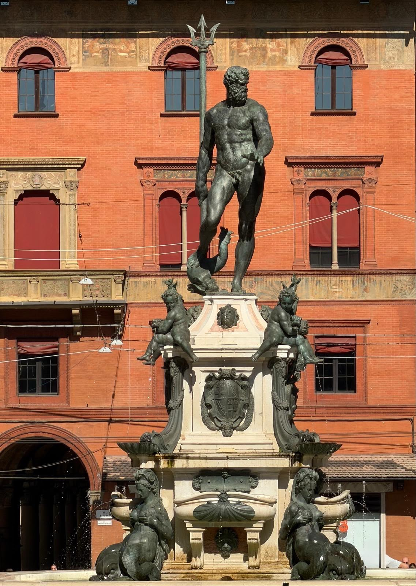
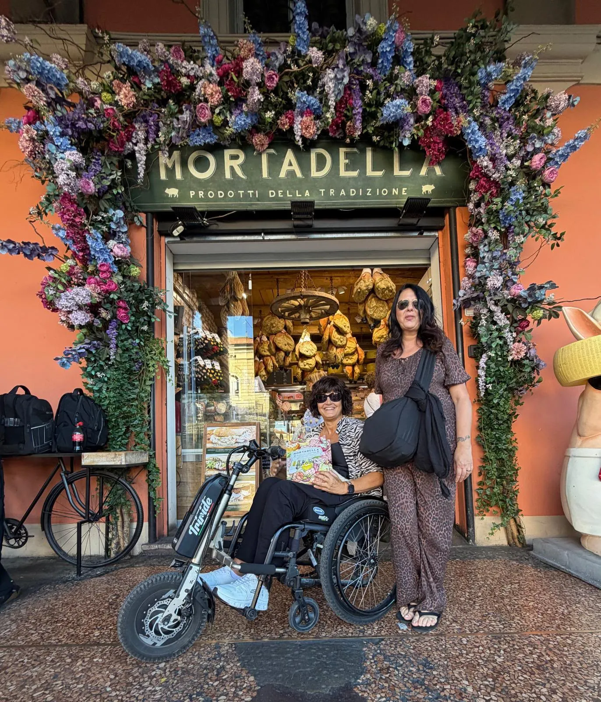

Bologna won me over once again. We spent a day with just one appointment booked in advance and plenty of time to wander together. And, above all, I found a city far more accessible and easy to enjoy in a wheelchair than I could have imagined.
Where we parked
Accessibility · Parking
We left the car in the Via della Grada car park, which has spaces reserved for disabled people.
It worked really well for me: we got there without having to enter the ZTL (the limited traffic zone), and the car park is still fairly close to the centre.
From there we started our tour: me with my wheelchair and the Triride, moving around comfortably all day long.
Piazza Maggiore: an embrace of history
Our first stop was Piazza Maggiore, the heart of Bologna. We gave ourselves time to admire it, look around and take photos: here every side of the square tells a piece of the city’s history.
The Basilica of San Petronio, dedicated to Bologna’s patron saint, dominates the square. Its unfinished façade, marble at the bottom and brick at the top, makes it instantly recognisable.
Next to it stands the Palazzo dei Notai, once the seat of the notaries’ guild: a medieval building with beautiful windows and a crenellated top.
On the west side is Palazzo d’Accursio, the historic town hall, recognisable by its Clock Tower.
Opposite the basilica, the Palazzo del Podestà recalls the public life of medieval Bologna. Above its portico rises the Torre dell’Arengo, whose bell once called the people together.
The Palazzo dei Banchi completes the east side with its elegant Renaissance façade and long portico, bringing harmony to the square.
Behind the Palazzo del Podestà is Palazzo Re Enzo, named after the son of Emperor Frederick II, who was held prisoner here after the battle of Fossalta.
The Fountain of Neptune
In nearby Piazza del Nettuno we admired the famous fountain, made in the 16th century by Giambologna to a design by Tommaso Laureti. The great bronze figure with his trident towers over the basin, surrounded by cherubs representing the great rivers of the continents known at the time. A must-stop for a photo.

What struck me straight away was the atmosphere of the centre: the wide pedestrian areas and Bologna’s famous porticoes made our walk especially pleasant.
Palazzo dell’Archiginnasio and the Anatomical Theatre
The only appointment we had booked was the guided tour of the Palazzo dell’Archiginnasio and the Anatomical Theatre.
Accessibility
How I got in
To get in with the wheelchair we used the entrance at Via de’ Foscherari 2, instead of the main entrance.
There is a doorbell there: we rang it and a member of staff came and took me along the accessible route.
In my case I was taken straight to the floor marked as the second floor, where I waited for the group while the other visitors did the first part of the tour.
On the same floor I also found an accessible toilet, which is always important for me to know.
On the day of our visit, the ticket was free for me and for my companion.
The tour: a Bologna to discover
I absolutely loved the guided tour: interesting and unusual.
We learned the history of the Archiginnasio, one of the symbols of Bologna’s university tradition, and visited the Aula Magna, one of the most fascinating rooms in the building.


The Anatomical Theatre
For me, the most evocative moment was the Anatomical Theatre, the 17th-century hall where anatomy lessons were held.
The statues, the central table where dissections took place and the layout of the room let you picture the students gathered to watch the lessons. A truly special place that has stayed with me.

A tour I absolutely recommend.
Lucio Dalla, the Two Towers and the Mercanzia
After the tour, we carried on wandering calmly around the centre.
We went along Via d’Azeglio, where the singer-songwriter Lucio Dalla lived, stopping to look at the tributes to him and his famous silhouette.
Then we headed on to Piazza della Mercanzia, one of Bologna’s most characteristic corners, and stopped to admire and photograph the Two Towers, the symbol of the city: the Asinelli Tower and the Garisenda Tower.
The Garisenda, shorter and leaning, makes a striking contrast with the slender Asinelli. We admired them from outside, enjoying this so recognisable view of Bologna.


From there we happily lost ourselves among the streets of the centre, the porticoes and the pedestrian areas.
The T-Days
Bologna seemed truly beautiful and pleasant to enjoy in a wheelchair. During our day we made the most of the T-Days, when the streets of the central “T” are closed to traffic and reserved for pedestrians.
For me it was a big advantage: I got around very well with the Triride and we could stroll together through the heart of the city in a more relaxed way.
Lunch at Trattoria Nonna Gigia
For lunch we chose Trattoria Nonna Gigia.
This time we decided to taste several dishes, to try different specialities of Bolognese cooking. We ordered the Tris Bologna, with:
- Tortellini in broth
- Gramigna pasta with sausage
- Green lasagne with Bolognese ragù

A real taste of traditional Bolognese cooking.
We also added a board of mortadella with tigelle, served warm.
Accessibility · Toilet
Useful to know
I found an accessible toilet in the restaurant: worth mentioning for anyone travelling in a wheelchair.
The Finestrella and some Bolognese shopping
After lunch we went to the Finestrella in Via Piella, one of the most curious and most photographed views in Bologna.
Through this little opening in the wall you can see the Moline canal, which flows between the houses and gives the area its “Little Venice” feel.

Of course, we had to take photos!
Good to know before you go
From the wheelchair, though, the little window was rather high and the view less comfortable. We looked for the best spot so I could enjoy the view: a small detail worth knowing before you get there.
Bolognese shopping
After the Finestrella we kept strolling unhurriedly through the streets of the centre. And of course there had to be a little food shopping: mortadella, handmade tortellini and typical Bolognese products.

Because a day in Bologna without bringing home some local food… wouldn’t be a real day in Bologna!
My “no surprises” summary
The things to remember, gathered here so they are easy to find.
| Item | Rating | Good to know |
|---|---|---|
| Parking | 5 out of 5 | In Via della Grada we found spaces reserved for disabled people, fairly close to the centre and reachable without entering the ZTL. |
| Centre and pedestrian route | 5 out of 5 | Along our route I got around well with the Triride. The pedestrian areas and the streets of the “T” closed to traffic made the walk more relaxed. |
| Archiginnasio and Anatomical Theatre | 5 out of 5 | At the Archiginnasio I found an accessible toilet. On the day of our visit the ticket was free for me and my companion. |
| Accessibility of the tour | 5 out of 5 | For wheelchair access we used the entrance at Via de’ Foscherari 2, ringing the bell and waiting for staff. I followed a dedicated route and waited for the group on the tour floor. |
| Accessibility of Trattoria Nonna Gigia | 5 out of 5 | I found an accessible toilet in the restaurant. |
| Tris Bologna at Trattoria Nonna Gigia | 4 out of 5 | Tortellini in broth, gramigna with sausage and green lasagne. |
The opening is rather high and from the wheelchair the view was less comfortable for me; it’s worth looking for the best spot to see the canal.
Accessible toilets we found
- Palazzo dell’Archiginnasio Accessible toilet on the same floor as the tour.
- Trattoria Nonna Gigia Accessible toilet in the restaurant.
Overall experience
5 hearts out of 5This story describes our experience with a wheelchair and Triride on Saturday 3 October 2026. Services, access and parking conditions can change: when planning your visit, check the latest information for each place.